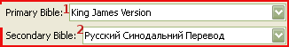

5.2 Bible Settings

1. Primary Bible: The Bible that version that will be display. If secondary version is selected, it will show primary on top and secondary on the bottom. At least one primary version needs to be selected
2. Secondary Bible A Bible version that will be displayed as dual and will be below primary on the display screen. Currently there is no preview of secondary Bible version, it shows only on the screen